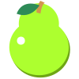

Tomo Break
About

- How to use it?
- What is the Pomodoro Technique?
Tomo Break uses the Pomodoro Technique, which splits your work into 25 minute intervals. Try to take the recommended number of breaks (5 - 15 minutes) and keep track of how many tomatoes it takes to get the job done.
It is a time-management system created by Francesco Cirillo, which boosts your health and productivity. Find out more here.